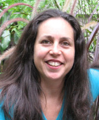

Martha
Eddy
|
||||
Martha Eddy, RSMT, CMA, Ed.D., founder and director of the Center for Kinesthetic Education (CKE), brings to the fields of health, wellness and education, her strong belief in the power of movement and somatic-awareness to enhance lives. She received her doctorate from Teachers College, Columbia University in movement science and education in 1998 and has a Masters of Arts in Applied Physiology and a Bachelors degree in Dance Education. She was an adjunct assistant professor in the Teachers College, Columbia University Dance Education Program for ten years.
At CKE, in New York City, she maintains a private practice as a Registered Somatic Movement Therapist (RSMT) that involves teaching clients to bring awareness to their movement coordination to enhance functional and expressive capacity. She also makes referrals to professionals for a wide variety of services. She especially enjoys her work with infants and children with behavioral, perceptual, and/or motor dysfunctions. This practice draws on her decade of training and teaching in neuro-developmental movement therapy with occupational therapist, Bonnie Bainbridge Cohen, and physical therapist, Irmgard Bartenieff. Her practical application of this work provides a foundation for her SOMAction Movement Therapy Training held biennially in New York and Massachusetts and affiliated with Moving On Center in California, a professional training program that she co-founded with Carol Swann.
She maintains her position as founding co-director and Director of Somatic Studies at Moving On Center -- The School of Participatory Arts and Research (MOC) that opened in September 1995 at Malonga Caselourd Cultural Center (formerly Alice Arts) in Oakland, California. The school's mission is to train movement professionals to be leaders who use mindful physical activity in new, somatic approaches to health, education and performance in their communities around the world. MOC is unique as a somatic movement education program that integrates creative expression inclusive of performance in its educational methods. Eddy continues to provide curricular oversight for the school.
Moving On Center provides all of the introductory courses for Eddy's SOMAction Movement Therapy Training (SMTT), a professional program that teaches Eddy's dynamic intervention cycle as well as principles and therapeutic strategies from Body-Mind Centering and Laban Movement Analysis. The SMTT can be studied in NY, MA or CA and through independent study in various locations around the world.
Martha Eddy has designed and taught courses in major universities including overviews of the field of somatic education and the relationship of kinesthetic learning to:
Her academic positions have been with Antioch New England Graduate School, Columbia University, Connecticut College, Hampshire College, Hope College, New York University, the New School for Social Research, and San Francisco State University. She has provided curricular oversight to the development of somatic movement education and therapy programs including Springfield Colleges in Massachusetts and Luther College, in Iowa.
She is currently on the faculty of the State University of New York (SUNY) Â Empire State College (ESC), and many of her courses are part of the doctoral level program at Santa Barbara Graduate Institute in Pre- and Peri-natal Psychology or Somatic Psychology. She teaches a course for NYC educators and therapists on Conflict Resolution through Movement and Dance through the Dance Education Laboratory in New York City, also affiliated with SUNY Â ESC. She guest teaches at diverse training programs and universities internationally as well as having taught in most of the major dance festivals throughout the United States, Canada, and Europe.
She has taught conflict resolution, movement, dance, physical and somatic education pedagogy to teachers and to youth in schools, universities, independent studios, and at conferences nationally and internationally. She periodically teaches open classes at Movement Afoot and at the Riverside Church Wellness Center where she served as Coordinator of the Wellness Center for two years.
Martha Eddy serves as a consultant to the NYC Department Education (e.g., developing the K Â 12 dance curriculum, Blueprint for Dance; providing in-service training for Occupational Therapists and Physical Therapists who work in the school system; advising principal). As a result of her ground-breaking doctoral research on "The Role of Physical Activity in Violence Prevention Programs for Youth," Martha Eddy works as an independent educational consultant or in conjunction with Educators for Social Responsibility and Project Renewal/The Tides Center in schools and community centers throughout the country inclusive of New York City public and independent schools. She played the role of Senior Program Advisor in the development of Project Renewal's Stress Reduction Days for the NYC public schools in the Ground Zero region post 9/11.
She continues to deepen her research and teaching methods regarding violence prevention in schools and recreational centers across the country by implementing her Peaceful Play Programming. She is currently writing numerous articles and a teaching manual on this topic. As part of her Embodying Peace classes she leads workshops with adults or children in conflict resolution, violence prevention, body awareness, non-verbal communication, neuro-motor strategies in education, stress reduction, the use of the arts in socio-emotional education, as well as related fields.
Martha Eddy has also been a research associate of the Kinesiology Department of San Francisco State University and is a Senior Research Associate with the Laban Bartenieff Institute of Movement Studies. She has piloted a study of the effects of aerobic exercise on aerobic capacity and self-perceived vitality amongst women who have been treated for breast cancer. This has involved pre and post surveys of participants' experiences in a flow-based aerobics program with special attention to lymphatic drainage through full rhythmic dancing that Dr. Eddy designed called Moving On Aerobics. She is currently involved in two research projects. In one study, sponsored by the Body-Mind Centering Association, Martha is working with Dr. Christine Kris (neuropsychologist, researcher, and educator) on quantitative polygraphic and correlated qualitative study of the developmental movement performance of people with brain disorders. The other study is with the Medical School and Dance Department of the University of Calgary and involves the integration of qualitative movement observations in the detection of special needs for the young child. The goal of each study is to develop a movement based assessment tool that has validity in diagnostic and therapeutic environments.
Martha Eddy is an avid arts advocate with a specialty in dance. Through the power of physical movement she has found that any person or group can become better at feeling life's satisfactions, embody peace, and contribute to creating stronger and happier communities. Martha lives with her family in New York City where she is active in her daughter's public school. For more information on Martha's offerings, download our brochure.
CKE Professionals provide Classes
and Private Sessions CKE Dances Teacher Biographies Rochelle Austin
AFAA certified fitness trainer, Capoeirista and "Praise Dancer" offers Introduction to martial arts through Capoeira Basics for All. Rochelle takes basic rhythms from Brazilian martial arts combined with music and song to make a fun filled class for anyone interested in movement and being in the body. Along with movement arts Rochelle is a practitioner of Thailand Yogic Touch; a bodywork art that focuses on relaxation, flexibility and stress reduction. She is the mother of three children.
Sherry Greenspan*
Elizabeth Howe Verrill, MA Special Educator & Tomatis Expert
Dafna Izcovich
Ron Lavine, D.C.
Scott Lyons
Tom Masters, M.S.
Cate McNider
Marcia Monroe
Eve Selver-Kassell
Carolina Naess
She began work with Dr. Martha Eddy at the Center of Kinesthetic Education in 2006. Carolina has developed a successful practice, working as a movement specialist for children with special needs. Through CKE she has worked in 4 schools in Harlem, New York, as well as privately with individual students. Programs included the Dr. Eddy’s ‘Brain & Body,’ which Carolina taught at the Dream Charter School in Harlem and shared at the EduLinks Annual Education Expo at NYU in March 2011. She has been an active volunteer with the Art of Living Foundation, co-teaching children internationally in schools and after school programs. Through this experience Carolina has developed practical life skills through yoga teaching, powerful breath work techniques and meditative practice. Carolina is now a qualified teacher in the childrens’ ART Excel course taught by Art of Living, as well as a qualified teacher for youth empowerment seminars (YES!) through the International Association of Human Values (IAHV). Carolina is experienced in both individual therapy and group practice. Laura Shapiro
Andrew Suseno
Ani Weinstein
 Nancy Zendora
Moving On Aerobics (Breast Cancer Survivorship program) facultyKaren Eubanks
Bonnie Schiffer*
Associate Faculty for Moving On AerobicsElena Lopez Sans*, RSME, ATI, AEPY
Nancy Bruning
*Moving on Aerobics/Movement Educators also providing classes and private sessions at CKE.
|
||||
|
|